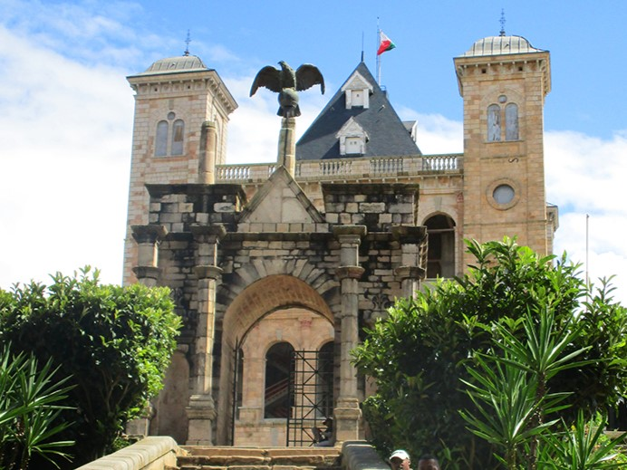
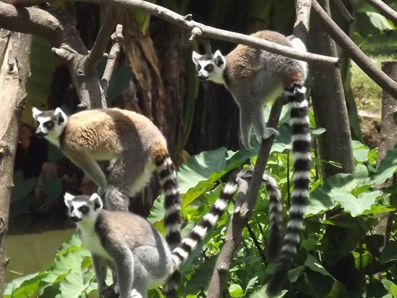
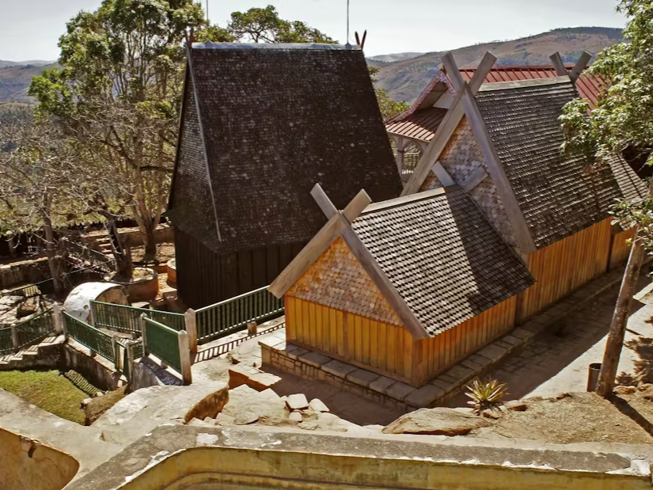
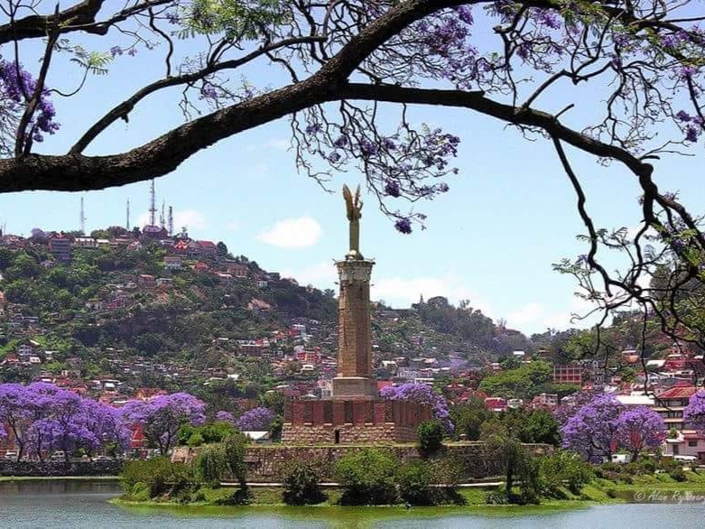
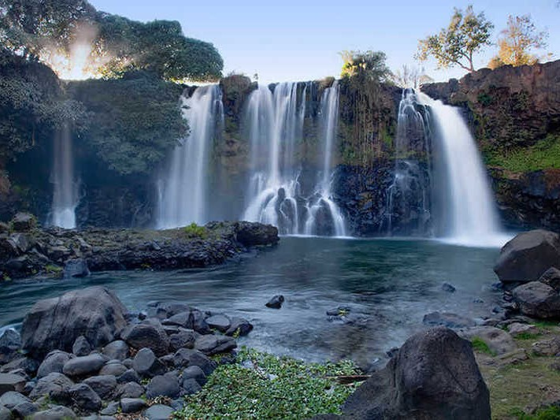
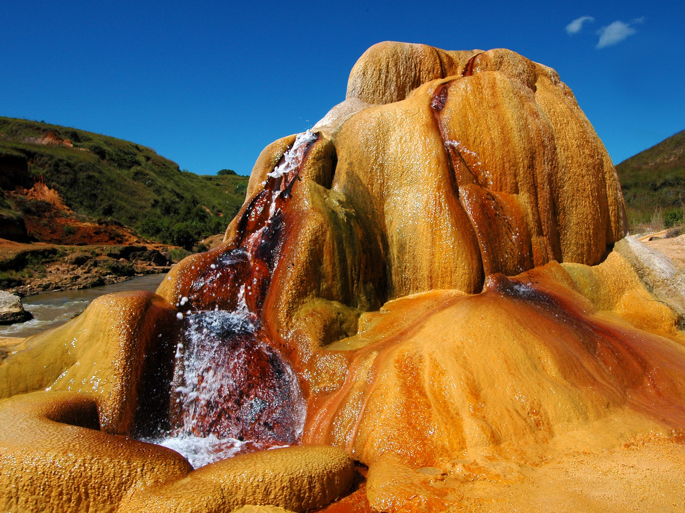
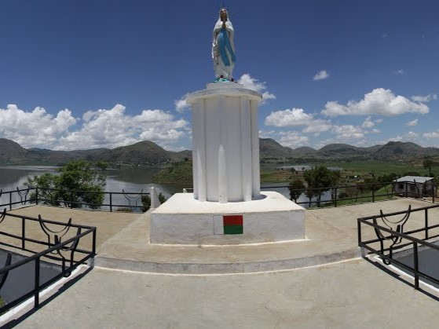
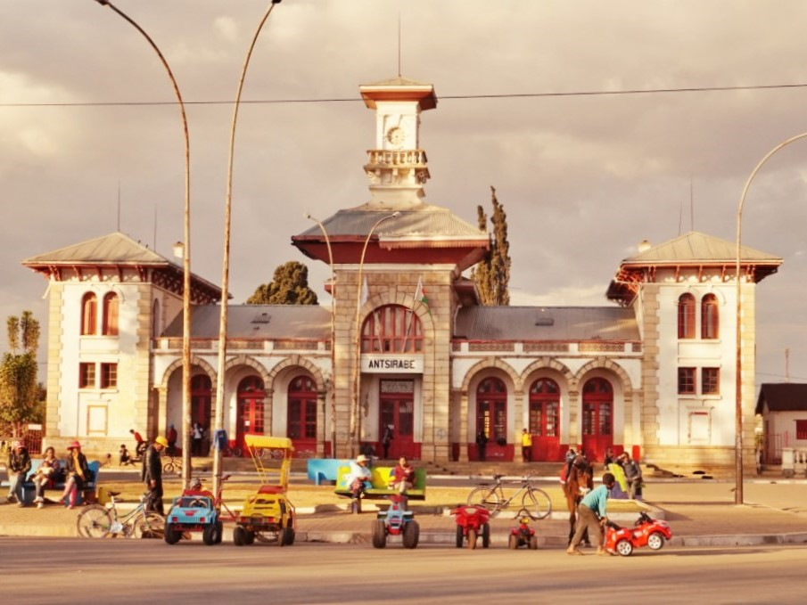
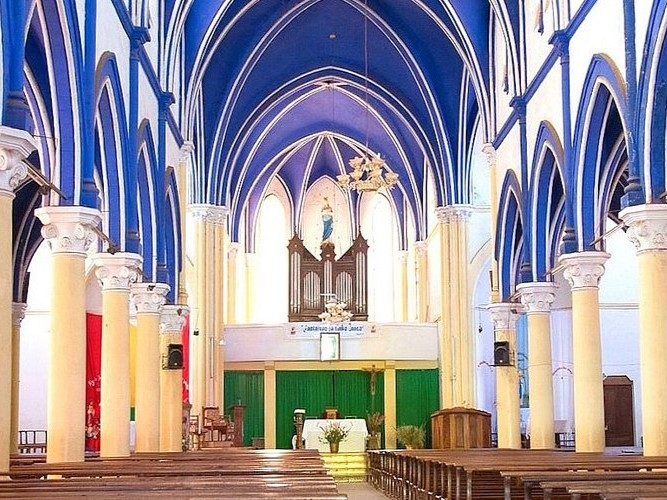

Antananarivo

Le palais royal de Manjakamiadana

Le parc botanique et zoologique de Tsimbazaza

Ambohimanga

Le lac Anosy
Ampefy

La chute de la Lilly

Les geysers

L'îlot de la Vierge
Antsirabe

L'avenue de la gare d'Antsirabe

L'église Notre Dame de la Salettes

Lac Tritriva
Fianarantsoa

Plage de Sainte Marie

Observation des baleines